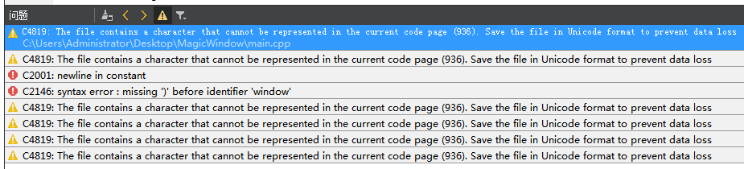

Qt5 强制要求源码的编码必须使用 UTF-8，不过，即使我们的源码都是 UTF-8 的了，仍然会遇到乱码问题，例如
- MinGW 编译没问题的工程使用 VS 编译时有可能报错
- MinGW 编译的程序运行时中文正常显示，VS 下编译通过，运行时却是乱码
通常有下面几种情况导致中文乱码:
- 源码不是 UTF-8 的
- 源码是 UTF-8 的，但 BOM 导致乱码 (VS 的需要 BOM，而 Linux，Mac 下默认是没有 BOM 的)
- 非 UTF-8 的运行环境导致乱码
下面来解决 Qt5 的乱码问题。
源码使用 UTF-8
为了保证源码是 UTF-8 的，需要把源码保存为 UTF-8 编码的
- QtCreator 的话设置编辑器的编码为 UTF-8 即可：
设置 -> 文本编辑器 -> 行为 > 文件编码，设置默认编码为 UTF-8 - 其他编辑器请自行进行相应的设置
BOM 问题

使用 VS 的编译器编译 Qt 项目时有可能会遇到像上面这样的警告和错误 C4819，一般都是因为程序的源文件 .h 和 .cpp 文件的编码虽然是 UTF-8 的，但是 缺少 BOM。这个问题也很好解决，给程序的源文件都加上 BOM 就可以了。
给文件添加 BOM 的方法也很多，例如使用 Notepad++ 一个一个的打开所有文件，然后都保存为带 BOM 的 UTF-8 就可以了，不过这样做效率显然不高，这里提供一个可以递归的给指定目录下所有指定后缀名的文件批量添加和删除 BOM 的工具，也是一个 Qt 的工程，请自行下载编译: Bomer 的源码
怎么判断一个 UTF-8 的文件是否有 BOM？
使用 HEX 文件编辑器打开文件，如果前 3 个字节为
EF BB BF则说明文件含有 BOM，否则没有 BOM。
界面显示中文乱码
下面的程序只有一个按钮，按钮的文本为 “你好”，使用 MinGW 编译运行，程序没有乱码问题。
1 |
|
然后使用 VS 编译器编译运行，编译没问题的情况下(如有 BOM 问题，请按上面方法先解决)，运行后按钮的文字出现了乱码，有 2 个解决方法:
中文字符串使用 QStringLiteral 创建
1
2
3
4
5
6
7
8
9
10
11
int main(int argc, char *argv[]) {
QApplication a(argc, argv);
QPushButton b(QStringLiteral("你好")); // 瞅这里
b.show();
return a.exec();
}再次编译运行，乱码问题解决了。这种方法在 MinGW 和 VS 中都没问题，但是仔细考虑一下，程序中如果有成百上千的中文字符串，每个地方都要修改，工作量大到让人崩溃。
使用 VS 的时候在 main() 函数前添加 pragma 指定程序编译时使用 UTF-8 处理字符串即可:
1
2
3
4
5
6
7
8
9
10
11
12
13
14
15
16
int main(int argc, char *argv[]) {
QApplication a(argc, argv);
QPushButton b("你好");
b.show();
return a.exec();
}
读取 UTF-8 文件乱码
能够正常的显示界面上的中文了，但是在 Windows 下读取 UTF-8 的文件仍然会发生乱码，因为如果不指定程序的运行时编码，就使用系统默认的，Windows 默认的编码是 GB2312，读取 UTF-8 文件时就默认作为 GB2312 来读取，所以就发生乱码了。解决这个问题只需要在 main 函数中调用 QTextCodec 指定为 UTF-8 即可：
1 |
|
判断程序运行时编码
使用 QTextStream，使用默认的 Codec，写中文到文件，然后使用 Notepad++，或者 Linux 的 file 命令就能看到文件的编码，这个编码就是程序的运行时编码，指定程序的运行时编码调用 QTextCodec::setCodecForLocale。